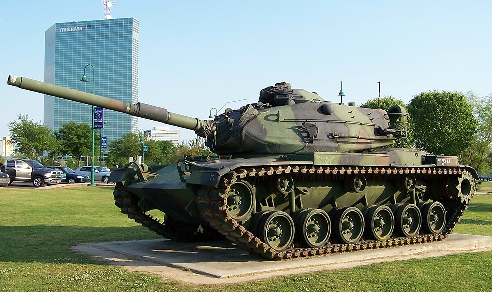

M60 Patton
Informacije o vozilu:
| Specifikacija | Detalji |
|---|---|
| Naziv | M60 Patton |
| Tip | Srednji tenk (46.3 tone) |
| Uveden u uporabu | 1960. godine |
| Naoružanje | top 105 mm M68, 7.62 mm M73 i M85 12.7 mm strojnica |
| Oklop | 120 mm |
| Brzina | 48 km/h |
| Posada | 4 člana |
M60 Patton je bio osmišljen s ciljem da se suprostavi po britanskim izvorima tadašnjem sovjetskom tenku naoružanim s 100-milimetarskim topom, te novijim tenkom koji je naoružan glatkocijevnim topom 115 mm. Američka vojska je imala hitnu potrebu nadograditi postojeći M48 Patton tenk kako bi se mogla suprostaviti snagama Varšavskog pakta koje su tada bile naoružane modernim tenkovima iz Sovjetskog saveza. Američka vojska je imala plan za dizajniranje tenka koji bi imao veću pokretljivost i domet, manje potrebe za servisiranjem i da bude naoružan topom od 105 mm. Trup tenka bi bio podijeljen u dva dijela, u prednjem dijelu bi bila posada, a u stražnjem motor.
M60A1 tenk čistač s postavljenim ERA oklopom u Zaljevskom ratu.